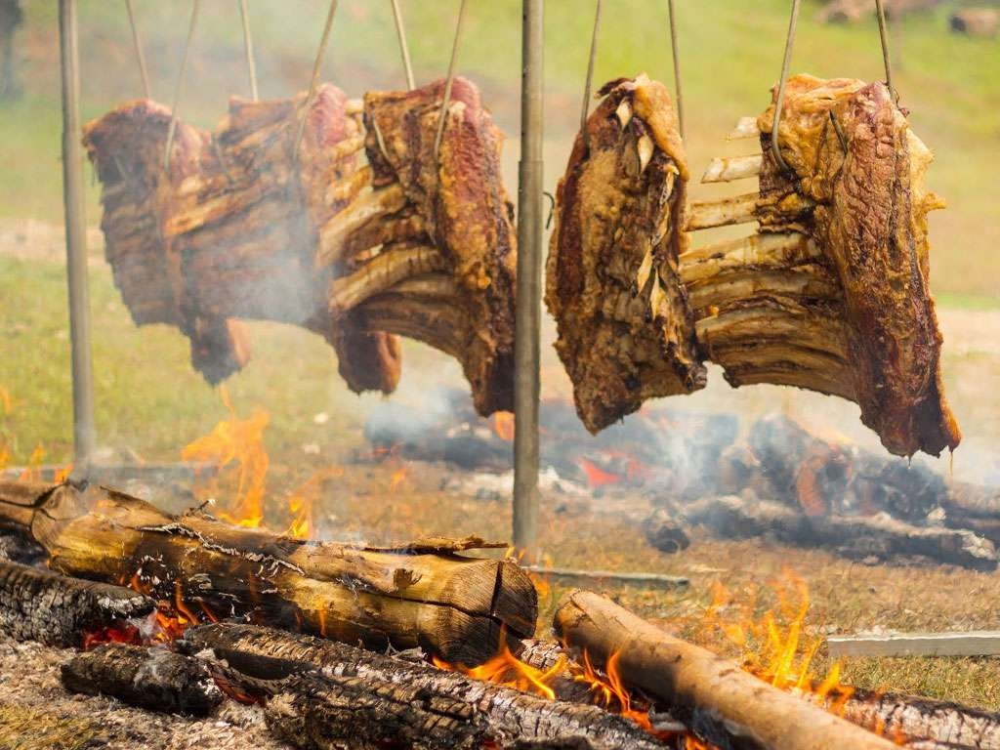
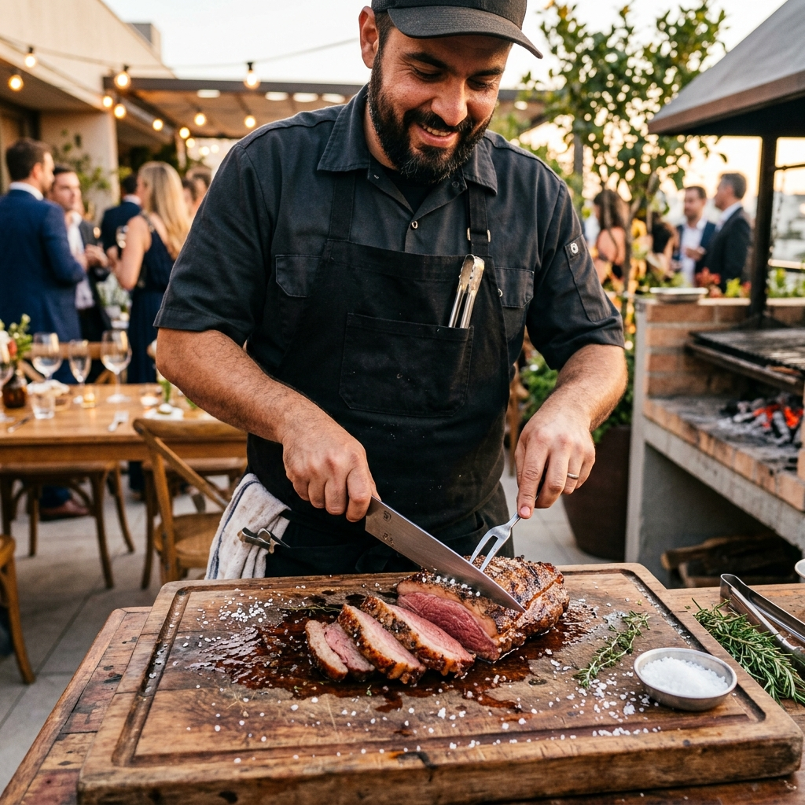
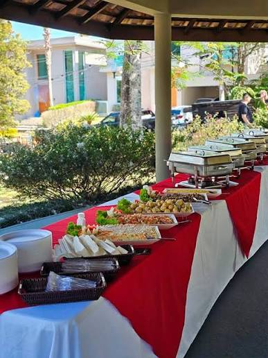
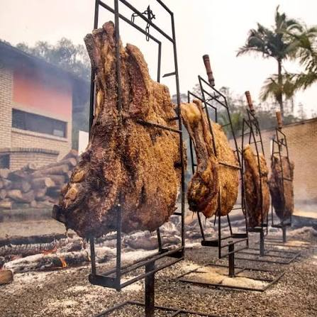

Cuidamos de tudo — da brasa ao prato —, com carnes nobres, rechauds de inox e equipe uniformizada para você aproveitar seus convidados.

Fazer um churrasco inesquecível não precisa te dar dor de cabeça. Em apenas 3 passos simples, nós transformamos sua festa em uma celebração épica.
Selecione o pacote ideal para o estilo da sua festa e o número de convidados. Montamos opções sob medida para a sua necessidade.
Chegamos antecedência trazendo carnes selecionadas, acompanhamentos artesanais, rechauds de inox, carvão, lenha e utensílios profissionais.
Assamos e servimos seus convidados com sorriso no rosto e muita fartura. No final, deixamos toda a área de apoio limpa e organizada.
Escolha o nível de experiência ou utilize a calculadora abaixo para estimar seu orçamento sob medida.
Selecione o número de convidados e o estilo do seu evento para ver uma estimativa em 1 clique:

Ideal para quem prefere comprar as próprias carnes mas exige um churrasco perfeito feito por especialistas.

Fartura e praticidade completa. Variedade de carnes nobres e acompanhamentos caseiros fresquinhos.

O verdadeiro show gastronômico no seu evento. Sabor inigualável e impacto visual inesquecível.
Fugimos do comum. Não somos um buffet amador com travessas improvisadas. Levamos uma verdadeira estrutura de restaurante para o seu local.
Servimos todos os acompanhamentos quentes em rechauds banho-maria de aço inox brilhantes. Comida quente do primeiro ao último convidado.
Carnes com certificação de origem, murchamento ideal e linguiça artesanal de verdade. Nada de cortes duros ou temperos industrializados.
Profissionais educados, atenciosos e prontos para servir com simpatia. Cuidam da reposição constante das mesas e da higiene do local.
Sem fotos de banco de imagem genéricas. Veja a estrutura real que levamos para as festas e chácaras da região.
Já realizamos eventos nos principais condomínios residenciais, sítios e chácaras de festas de toda a região.
Atendimento completo em residências, condomínios fechados (como Botujuru, Figueira Branca) e chácaras de eventos por toda a cidade.
Chácaras e condomínios tradicionais (Medeiros, Eloy Chaves, Malota, Engordadouro, Caxambu, Terras de São Carlos e Itupeva).
Foco em grandes eventos de Fogo de Chão em sítios, chácaras de aluguel para finais de semana e confraternizações em geral.
Veja a opinião real de quem contratou o Eduardo Buffet de Churrasco para marcar datas especiais.
"Contratei o Eduardo para o aniversário do meu marido em uma chácara em Jarinu. A costela de fogo de chão foi o comentário da festa toda! Muita fartura e equipe extremamente educada."
"Serviço impecável. Não tive preocupação nenhuma no dia do evento. A carne veio no ponto perfeito e a mesa dos rechauds ficou linda. Recomendo de olhos fechados!"
"Fizemos a confraternização de fim de ano da nossa empresa com o Eduardo e foi um sucesso total. Todos elogiaram o pão de alho e a picanha. Nota 10 em pontualidade!"
Tudo o que você precisa saber antes de agendar a data do seu evento conosco.